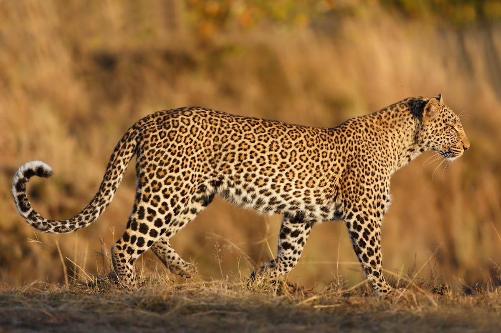
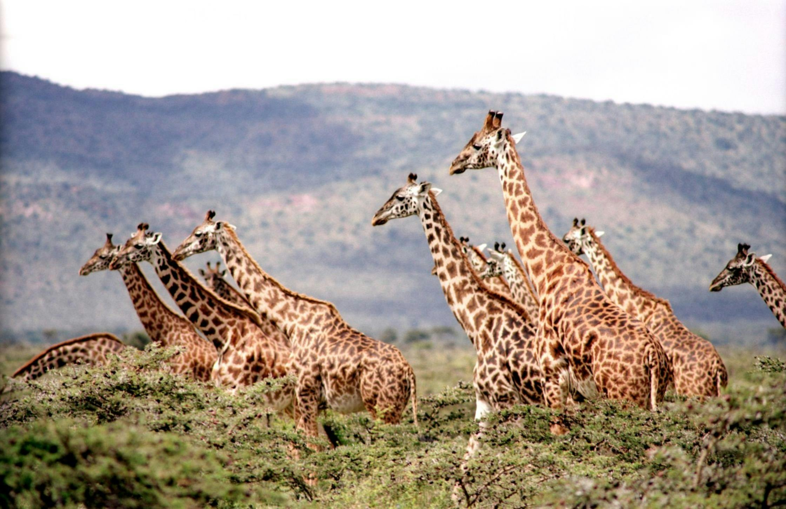

Different Wildlife Locations
-

Sinharaja Forest
Sinharaja, a UNESCO World Heritage Site, is a tropical rainforest in southwestern Sri Lanka. It is a biodiversity location, with several indigenous plants, birds, and amphibians. Visitors can explore the lush forest, waterfalls, and other wildlife.
-

Udawalawe National Park
Udawalawe, located in southern Sri Lanka, is well-known for its massive elephant population. The park surrounds the Udawalawe Reservoir and is home to buffalo, crocodiles, and a variety of birds.
-

Gal Oya National Park
Gal Oya, located in the southeastern region of the country, is well-known for its unique boat safaris on the Senanayake Samudraya reservoir. The park is home to elephants, crocodiles, and a variety of birds.